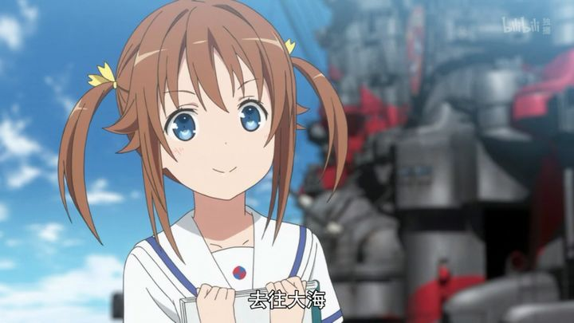

高校舰队
第一集:《忍无可忍中出了教官的我走投无路只能造反了》
第二集:《在大海上邂逅德棍是不是搞错了什么》
第三集:《就算是潜艇只要有深海炸弹就没问题 了你说对吧》
第四集:《我们仍未知道那天所看 到的炮术委员突然狂暴化的原因》
第五集:《舰长沉了! 因为舰长撞到了作为叛军的武藏号丢掉的大型垃圾上》
第六集:《海色高校★青 春波纹~当我还在思考回到船后会怎么样时，遇到了哭哭啼啼的航海长
并强迫我带着她赛艇，从此过着白马王子-样的生活而让我非常受到船，上女生的欢迎，但是好奇怪
啊我的眼前都是副舰长愤怒的脸,于是我的海上恋爱喜剧就这样开始了》
第七集:《副舰长找不到出口， 不管怎么想都是你们这些猫的错!》
第八集:《如果驱逐舰的女子高中生舰长读了书记员的涨潮时间表的话》
第九集:《关于我完全接受不 了德国金发少女离开晴风号这件事》
第十集:《夹在副舰长与轮机长与副轮机长之间的惨烈修罗场》
第十一集:《路人青梅竹马的养成方法一-Girls Side》
第十二集:《我叫岬爷, 我最牛》
(其中我最喜欢的是宗谷真白)

